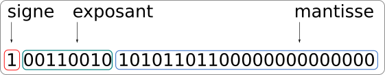

Les nombres flottants#
Dans les langages de programmation comme Python, les nombres à virgule sont appelés des flottants ou float et se notent avec un point. Par exemple, le nombre 2,5 se note 2.5.
Les nombres flottants représentent les nombres réels. Comme les nombres entiers, ils s’écrivent en binaire:
La partie entière est composée de puissances de 2 positives;
La partie après la virgule (ou le point), est composée de puissances de 2 négatives.
Exemple
Conversion de binaire à décimal#
Pour convertir un nombre flottant codé en binaire en un nombre décimal, on calcule la somme des puissances de 2 positives et négatives. On rappelle quelques valeurs de puissances de 2.
\(2^{1}\) |
\(2^{0}\) |
\(2^{-1}\) |
\(2^{-2}\) |
\(2^{-3}\) |
\(2^{-4}\) |
\(2^{-5}\) |
\(2^{-6}\) |
\(2^{-7}\) |
\(2^{-8}\) |
\(2\) |
\(1\) |
\(0,5\) |
\(0,25\) |
\(0,125\) |
\(0,0625\) |
\(0,03125\) |
\(0,015625\) |
\(0,0078125\) |
\(0,00390625\) |
Exemple
Conversion du nombre binaire \(1.01_{2}\) en base 10.
Conversion de décimal à binaire#
Nous tapons sur le clavier des nombres avec la notation décimale mais ces nombres sont convertis en binaire pour la machine.
La conversion d’un nombre en écriture décimale en écriture binaire se fait en deux temps.
Conversion de la partie entière placée avant la virgule;
Conversion de la partie après la virgule.
On donne ci-après un algorithme de conversion d’un nombre flottant \(x\):
on convertit la partie entière de x (vu précédemment).
on soustrait la partie entière de x à x (nombre inférieur ou égal à 1)
soit d la partie décimale de x
tant que d est différent de 0:
d=d*2
si d >= 1 alors :
d=d-1
le chiffre binaire vaut 1
sinon
le chiffre binaire vaut 0
Exemple
Conversion en binaire du nombre \(2,375\):
La partie entière vaut 2 que l’on convertit : \(2_{10}=10_{2}\)
La partie décimale, après la virgule:
\(0,375 \times 2 = 0,750\) or \(0,75 < 1\) donc le premier chiffre après la virgule est 0;
\(0,750 \times 2 = 1,5\) or \(1,5 > 1\) donc le second chiffre après la virgule est 1 et on retire 1 à notre partie décimale;
\(0,5 \times 2 = 1\) or \(1 = 1\) donc le dernier chiffre après la virgule est un 1 et on retire 1 à notre partie décimale.
Comme notre partie décimale est 0, on a terminé la conversion.
Le nombre \(2,375_{10}\) en base 10 s’écrit \(10,011_{2}\) en binaire.
Avertissement
Ainsi programmé, on risque d’avoir dans certains cas une boucle infinie. Il faudra ajouter une instruction pour l’éviter.
Dans certains cas, la partie après la virgule est infinie. Comme la machine alloue un nombre de bits fini, la valeur est donc approchée et peut alors générer des erreurs dans les calculs.
Exemple
La valeur obtenue par le calcul \(0,1+0,2\) en binaire est une valeur approchée de la valeur exacte \(0,3\).
Les nombres \(0,1\) et \(0,2\) ont une partie après la virgule infinie donc approchée par la machine.
Par conséquent, le nombre \(0,3\) a lui aussi une valeur approchée par la machine.
>>> 0.1+0.2
0.30000000000000004
>>> 0.1*3
0.30000000000000004
>>> 0.3*3
0.8999999999999999
Conversion mathématique#
La conversion d’un nombre décimal en écriture binaire peut utiliser une écriture fractionnaire dont le numérateur est un nombre entier et le dénominateur une puissance de 2.
Tout nombre décimal \(x\) qui s’écrit en fraction de la forme \(\dfrac{n}{2^{p}}\) a la même écriture binaire que le numérateur \(n\) une fois le séparateur (virgule, point) déplacé de \(p\) chiffres vers la gauche.
Exemple
On remarque que \(2,375 = \dfrac{19}{8} = \dfrac{19}{2^{3}}\)
Le nombre \(19_{10}=16+2+1=2^{4}+2^{3}+2^{1}+2^{0}\) soit \(10011_{2}\) en binaire.
L’exposant du dénominateur est \(p=3\) donc avec un décalage de trois rangs vers la gauche, on obtient le nombre \(10,011_{2}\).
Notation scientifique#
Dans le système décimal, les grands et petits nombres sont écrits en notation scientifique.
Par exemple, la valeur 7 milliards se note \(7 \times 10^{9}\). On rappelle que le nombre écrit devant la puissance de 10 est un nombre compris entre 1 et 10 (exclus).
En binaire, les nombres peuvent s’écrire avec une puissance de \(2\). La virgule dans le nombre se positionne selon l’exposant de la puissance de 2. Voilà pourquoi on parle de flottant en faisant référence à cette virgule qui flotte.
Exemple
Avec un exposant \(n=3\) : \(1101,0101_{2}=1,1010101 \times 2^{3}\)
Avec un exposant \(n=2\) : \(1101,0101_{2}=11,010101 \times 2^{2}\)
Avec un exposant \(n=-4\) : \(1101,0101_{2}=11010101 \times 2^{-4}\)
Sur les machines, des normes d’écriture des nombres flottants existent selon l’encodage en 32 ou 64 bits et reposent sur l’usage des puissances de 2.
On peut généraliser ainsi:
le premier bit est réservé au signe du nombre;
les bits suivants (8 ou 11) sont réservés à l’exposant;
les derniers bits (23 ou 52) appelé mantisse sont réservés à la valeur du nombre. Cette valeur est comprise entre 1 et 2 ce qui implique que le premier chiffre de la mantisse vaut 1. Par conséquent, les chiffres de l’écriture binaire sont ceux de la partie décimale.
Le nombre ainsi représenté a pour valeur:
le signe vaut 1, donc le nombre est négatif.
l’exposant e:
\[ \begin{align}\begin{aligned}e &= 2^{7}+2^{2}+2^{1} - 127\\e &= 128+4+2 - 127\\e &= 7\end{aligned}\end{align} \]mantisse m:
\[ \begin{align}\begin{aligned}m &= 1 + 2^{-1} + 2^{-3} + 2^{-5} + 2^{-6} + 2^{-8} + 2^{-9}\\m &= 1,677734375\end{aligned}\end{align} \]
Au final, on obtient:
\[-1,677734375 \times 2^{7} = -214,75\]
{kind=link}